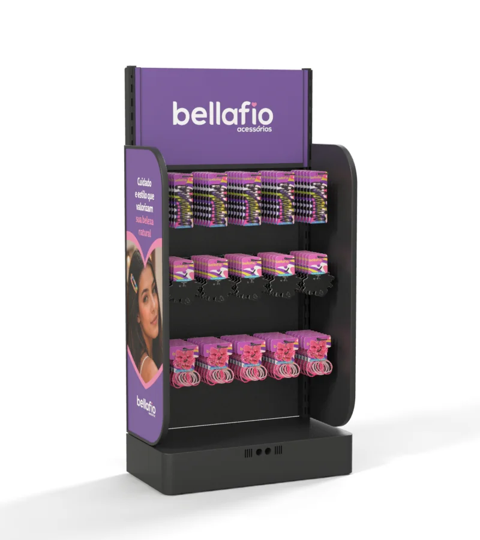
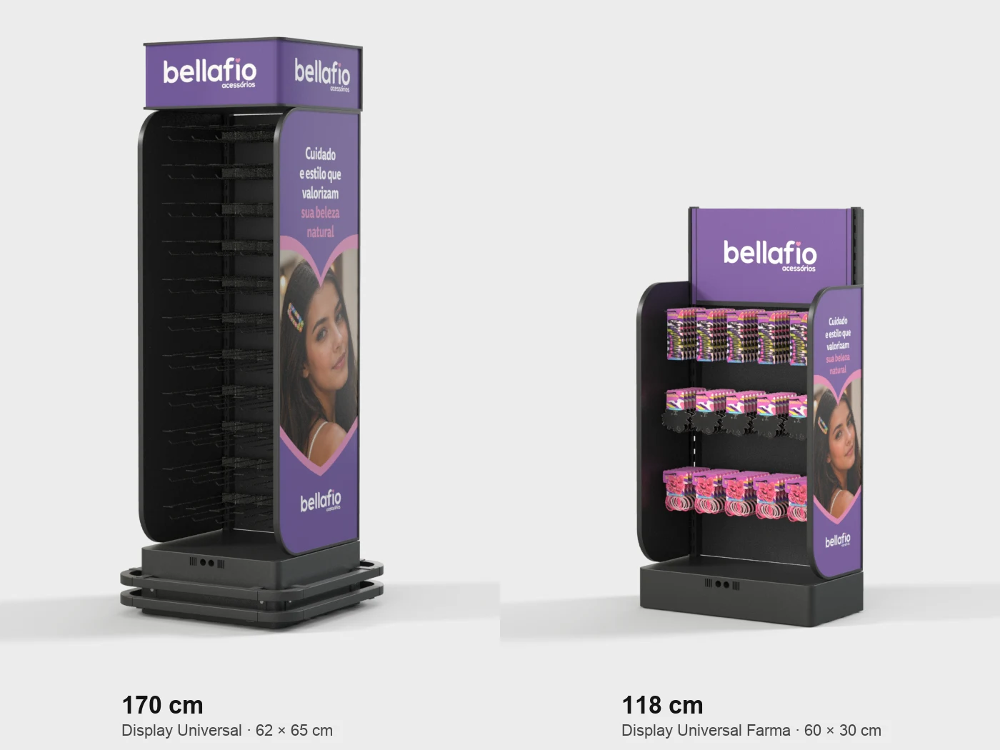
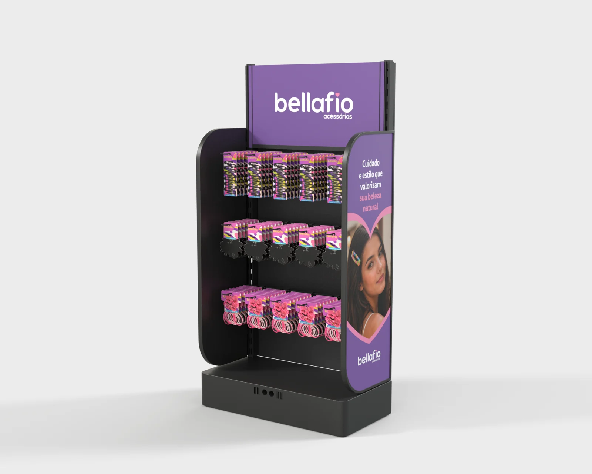
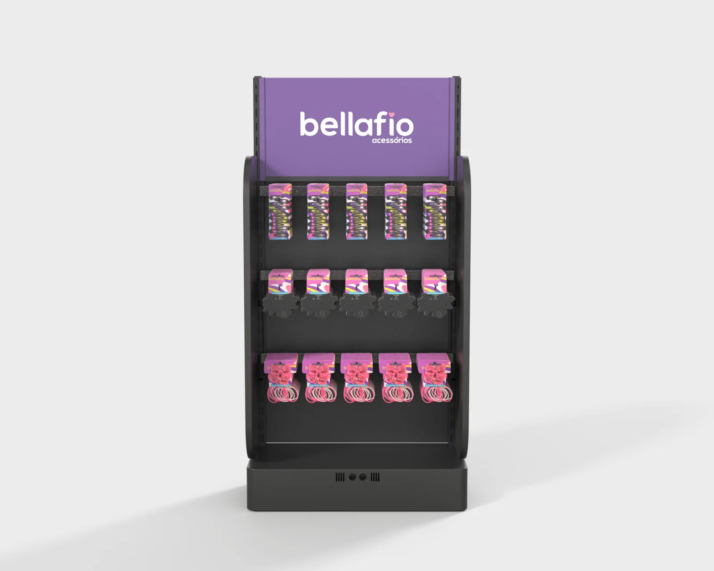
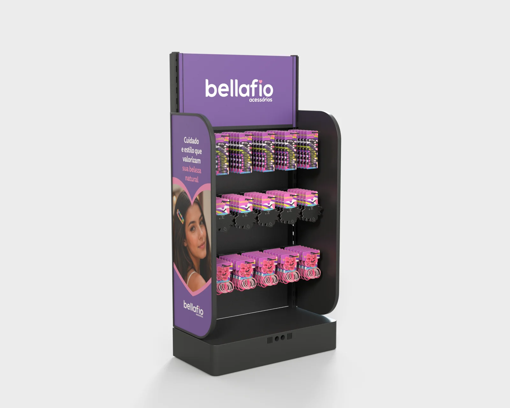
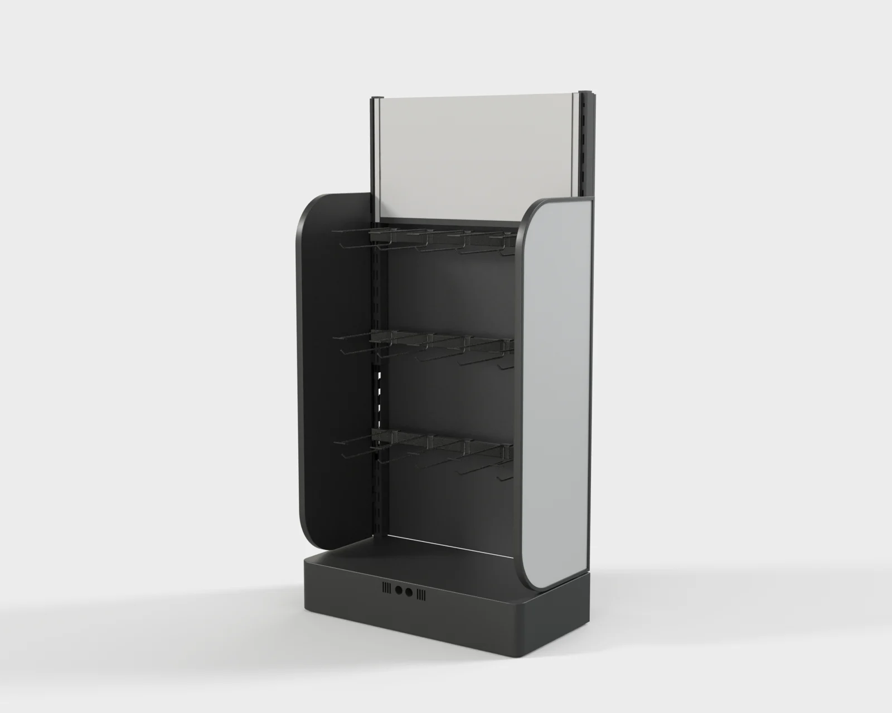
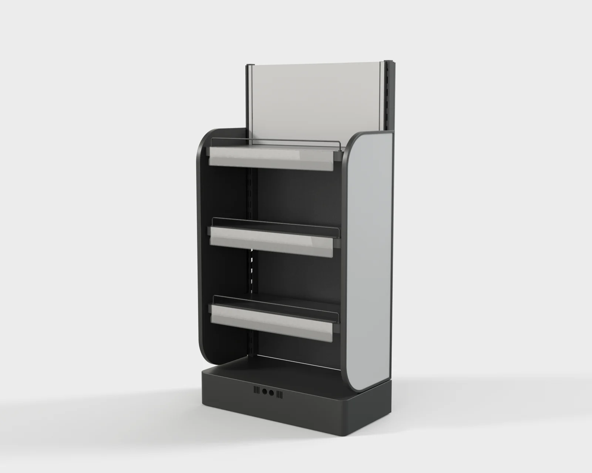
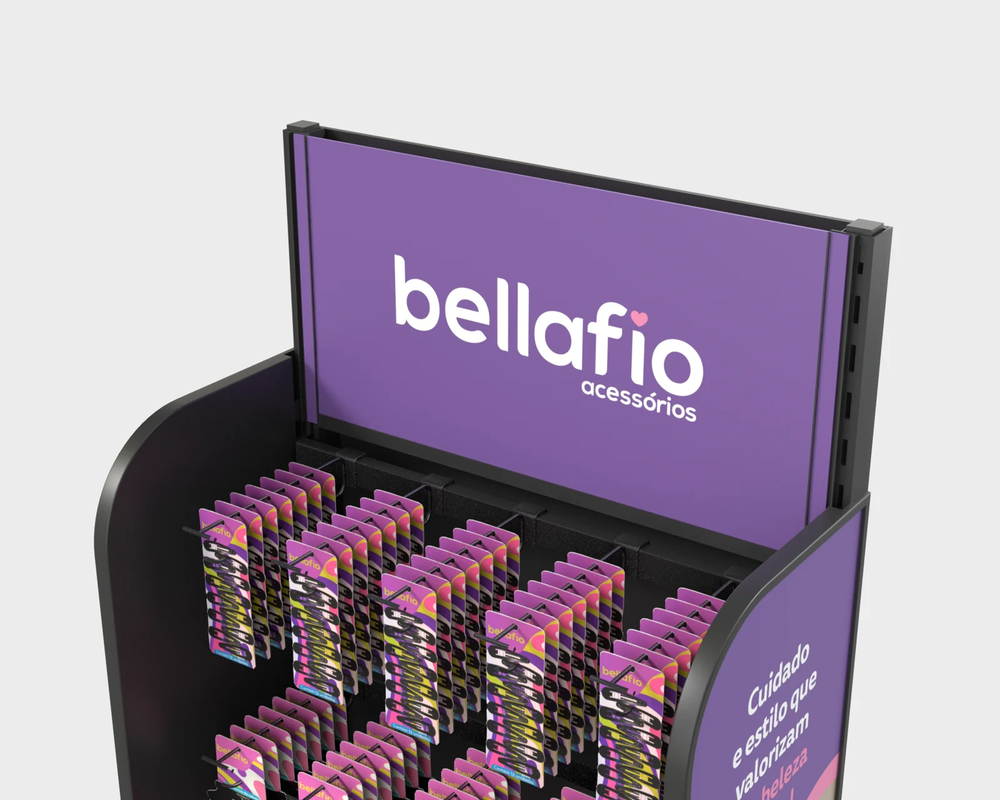
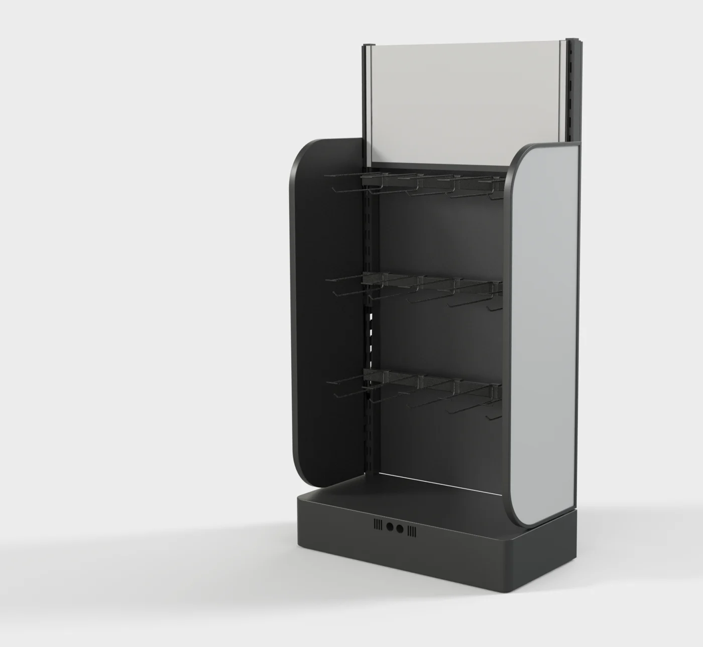

Do Display
Universal ao
canal farma
O mesmo sistema modular, mais baixo e mais raso, desenhado para caber na ponta de gôndola da farmácia
O mesmo sistema, na medida da farmácia.

Os dois na mesma escala, com a mesma câmera e a comunicação Bellafio.
Uma base, duas versões.
Gancheira para blister e acessórios, prateleira para caixas e frascos.
- Medida
- 600 × 300 × 1.180 mm
- Gancheira
- 3 fileiras · 15 ganchos de 200 mm
- Prateleira
- 3 níveis + o topo da base

Comunicação Bellafio nas laterais e na testeira, com grampos, elásticos e laços nas três fileiras de gancheira.

Cinco ganchos por fileira, uma linha de produto por fileira: o shopper lê a marca e o produto de uma vez.

A lateral esquerda repete a arte: comunicação nos dois lados da ponta.

A estrutura pronta para qualquer marca, com as áreas de comunicação em cinza.

Três prateleiras com porta-preço, a de cima na frente da testeira, para caixas e frascos.

O PS da testeira corre em dois perfis U presos nas cremalheiras e sai por cima para trocar a campanha.

Seis peças, tudo encaixa.
- Testeira recuadaPS 3 mm impresso, 552 × 290 mm, em perfis U de aço nas cremalheiras. Sai por cima.
- Laterais curvasChapa com a curva do Display Universal, 960 mm de altura, comunicação cambiável dos dois lados.
- CremalheirasAs mesmas colunas traseiras com furação dupla, agora com 1.060 mm.
- GancheirasBarra com 5 ganchos de 200 mm e porta-etiqueta na ponta. Encaixa na cremalheira, sem ferramenta.
- PrateleirasRequadro com anteparo de arame e porta-preço, 562 × 250 mm. Trocam de lugar com as gancheiras.
- Base sólidaChapa sobre metalon, 600 × 300 × 115 mm, com o módulo inteligente e os sensores no centro da frente.
O display na ponta da farmácia.
Aponte a câmera do celular para o código e toque em Ver no meu espaço. O display aparece em tamanho real, abastecido com Bellafio.
- iPhoneAbre no Safari, com o AR Quick Look.
- AndroidAbre no Chrome, com o Scene Viewer.
- Escala travada60 × 30 × 118 cm, do jeito que vai para a loja.
projetos.75lab.com.br/ar/ngv-display-farma/
Aprovar,
vestir,
prototipar
1. Aprovação do formato farma · 2. Comunicação das outras marcas (Vitalitabs, De Llares, Savedent) · 3. Executivo e protótipo